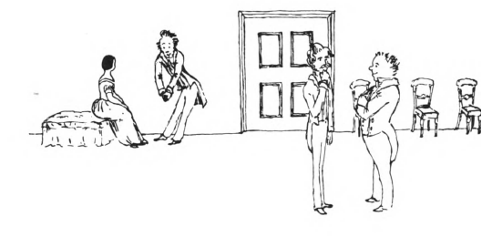
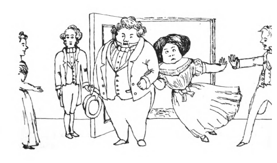

The (almost really) Complete Works of Lewis Carroll
From Our Own Correspondent
Source: Mischmasch

“The first idea that struck us on entrance was, the extremely select nature of the assembly.

“One of the earliest arrivals was a gentleman of unquestionable ‘ton’: the lady who accompanied him excited considerable attention, on entering the room, by her exquisite muslin skirt and slip.”